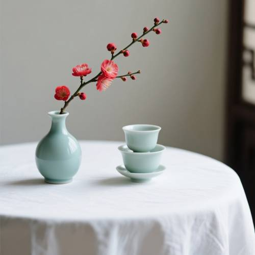

Entity Layout — On a white tablecloth, on the left side of the picture is a celadon va
On a white tablecloth, on the left side of the picture is a celadon vase with a red plum branch, and on the right are two stacked tea cups.


Judge — Direct
- FAILEntity Layout - Two-Dimensional Space — In the image, a celadon vase containing a red plum branch is positioned on the left side of a white-clothed table. To the right of the vase, there is a celadon lidded teacup (gaiwan) resting on a saucer. This is not two stacked tea cups as specified in the prompt, but a single teacup set. Therefore, while the vase is correctly placed on the left, the object on the right does not match the prompt's description, failing to meet the full layout requirement.
Judge — Continuum
- PASSEntity Layout - Two-Dimensional Space — The image displays a celadon vase with a red plum branch positioned on the left side of the composition. To the right of the vase are two stacked tea cups. This arrangement matches the layout specified in the prompt.
What the agent did
Thinking
The user is asking for the following image: a white tablecloth as the background, on the left side of the frame a celadon vase holding a red plum blossom branch, on the right two stacked tea cups. Let me generate the image with qwen-image. I should add visual details: a celadon (greenish-blue) vase with a red plum blossom branch in it, on the left; two tea cups stacked on top of each other (one placed on top of the other), on the right. Probably a minimalist still-life photography scene. First, let me generate the image.
Step 1 — `generate_image`
{
"model": "qwen-image",
"prompt": "A serene still life photograph on a white tablecloth. On the left side of the picture stands a celadon porcelain vase with a soft pale blue-green glaze, holding a single elegant red plum blossom branch with delicate red plum blossoms and buds. On the right side are two small tea cups stacked neatly, one cup placed on top of the other. Soft natural lighting, minimalist Chinese aesthetic, clean composition, shallow depth of field.",
"width": 1024,
"height": 1024
}Result img_0
Thinking
Let's verify the generated image against the prompt: 1. White tablecloth ✓ — Yes, the table is covered with a white tablecloth. 2. Celadon vase on the left side ✓ — Yes, on the left there's a celadon (pale blue-green) vase. 3. Red plum blossom branch ✓ — The vase has red plum blossoms (red/pink blossoms) and buds on the branch. 4. Two stacked tea cups on the right ✓ — There are two cups, one on top of the other… wait, let me take a closer look. On the right there's one cup on top of another cup, and it looks like there's a saucer underneath. Two stacked cups — yes, one cup is stacked on top of another cup. That matches "two stacked tea cups." This image looks good. The cups might be slightly off-center, but the prompt says "on the right" — they're positioned right of center. It's a subtle point, but within acceptable range. Let me inspect the details more carefully. The composition is: vase on the left, cups on the right (though not far to the right, but that's fine). Let me zoom in to check the details — for instance, is the vase actually celadon (pale blue-green)? Yes, it looks like a pale blue-green celadon glaze. The plum blossoms are red/pink — red plum blossoms. Good. The stacked cups: the top cup is placed on top of the bottom cup, which is on the saucer. That's a stack of two cups. Good. This image seems to match well. I think it's already quite good. Maybe I could confirm by inspecting a region, but the image looks solid. Let me mark this as the best. Actually, let me double-check one more point: "two stacked tea cups" — in the image, there's one cup on top of another cup. Yes. Both are celadon-colored tea cups, which is fine. I'll mark img_0 as the best and stop. According to the procedure: generation → inspection → editing. The image appears to match. Good enough is a stopping condition. Let me mark this as the best.
Step 2 — `mark_best`
{
"image": "img_0",
"reason": "Matches the prompt: white tablecloth, celadon vase with red plum branch on the left, two stacked celadon tea cups on the right."
}Thinking
The image matches the prompt well: - White tablecloth ✓ - Celadon vase on the left ✓ (a pale blue-green glazed vase) - Red plum blossom branch ✓ (red plum blossoms with buds on a branch) - Two stacked teacups on the right ✓ (one on top of the other, with a saucer underneath) The composition is clean and well-balanced. The details look good too. I'm confident in this result. Stopping here.
Model
The image matches the prompt: a celadon vase holding a red plum blossom branch stands on the left over a white tablecloth, and two celadon tea cups are stacked neatly on the right, one atop the other on a small saucer. The soft lighting and minimalist composition give it a calm, classic still-life feel. I've marked it as the best result.